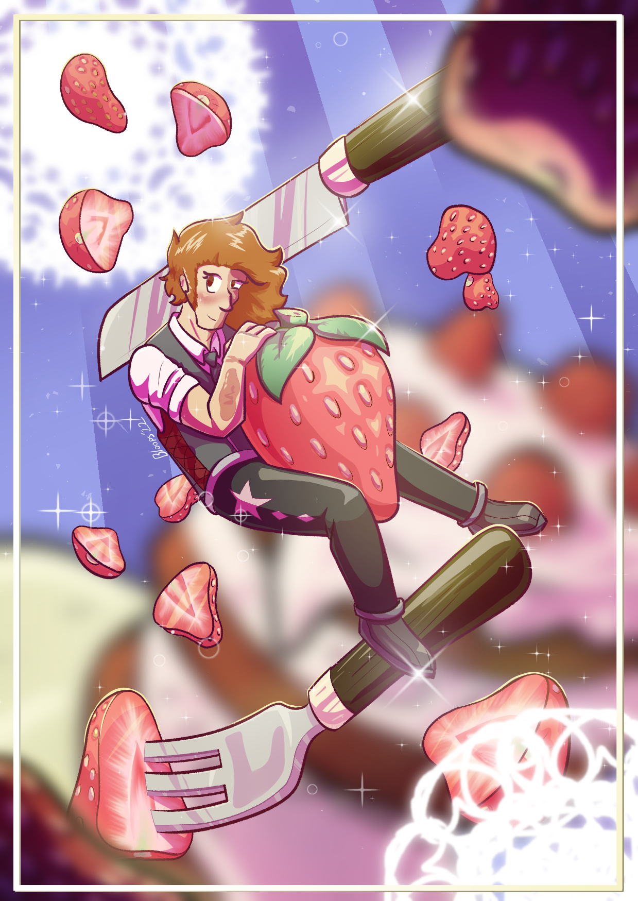

Illustrations

This image was inspired by the recently added Lush Caves biome in Minecraft. The creature themself is a guardian of an underground wilderness and is to defend it with their life. This illustration was sketched out with pencil and paper, and transitioned to Clip Studio Paint.

This illustration is entirely digital, and was made for the purpose of being the cover for my graphic novel pitch Stars Fountain. The four characters we see here are the main group of friends, and the one swimming to the air bubble is Charlize, the protagonist.
This is also a fully digital illustration, this time depicting the love interest Konstantin from my webcomic Haunted Housemate. This illustration was inspired by the idea of red velvet cakes, K-pop fashion, and the fact that Kon has a majority red color pallet.

This is a digital painting based off of a dream I had once. I was in a video game where I found myself on this floating island you see here. Black hole included. I asked the lady in the van what the large hole in reality was, and all she could say was Death, I think. So tell me, which is better: to walk through a door where an unpredictable death is on the other side, or to make that decision yourself.
I never got to answer.